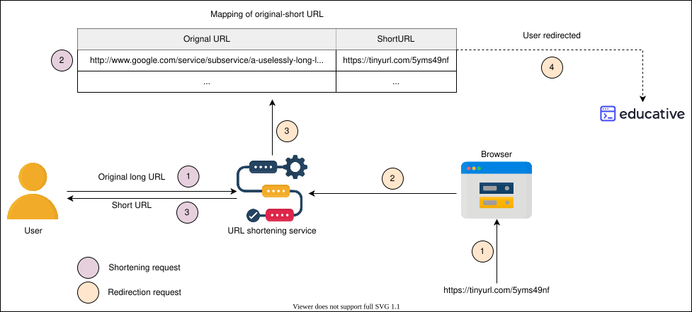
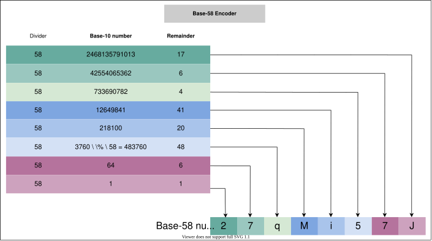
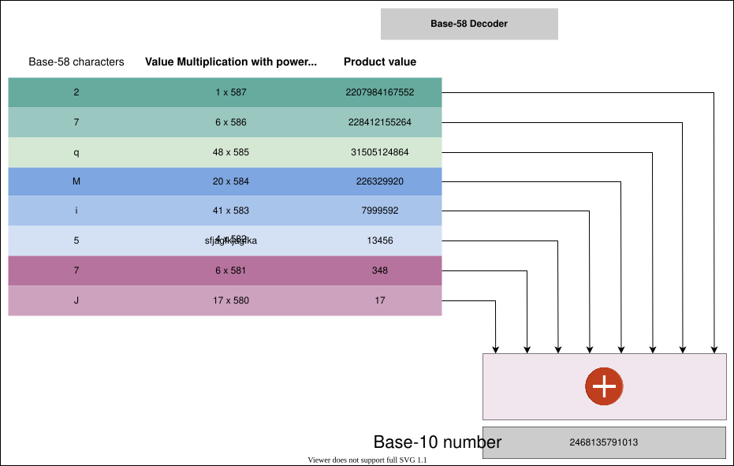

34. Design a URL Shortening Service - TinyURL
System Design: TinyURL
System Design: TinyURL
Let's design a service similar to TinyURL for shortening the uniform resource locator (URL).
We'll cover the following
Introduction#
URL shortening is a service that produces short aliases for long URLs, commonly referred to as short links. Upon clicking, these short links direct to the original URLs. The following illustration depicts how the process works:

Advantages#
The key advantages of a URL shortening service are:
- Shortened URLs are convenient to use: they optimize link usage across different forms of devices due to their enhanced accessibility and non-breakability.
- They are visually professional, engaging and facilitate a higher degree of sharing possibilities.
- They are less error-prone while typing.
- They require smaller storage space at the user’s end.
Disadvantages#
The URL shortening service has some associated drawbacks as well. Some of them are as follows:
- We lose the originality of our brand by using a short URL generated by a third-party service. Many different brands using the same service get short URLs containing the same domain.
- Since we’re using a third-party service for URL shortening, the possibility of it getting shut down and wiping all our shortened URLs will always be there.
- Our business brand image depends on the trustworthiness of a URL shortening service. The wrong business move might negatively impact our business. The competition for acquiring the in-demand custom short URLs is immense, so it might be possible that the best custom URLs are already taken by the time we start generating short URLs.
How will we design a URL shortening service?#
We’ve divided the URL shortening service design into the following five lessons:
- Requirements: This lesson discusses the functional and non-functional requirements of the URL shortening service, along with estimating the resources required to achieve these requirements. Moreover, it also lists down the fundamental building blocks needed to build such a service.
- Design and Deployment: This explains the working and usage of each component, the linkage among them, and the overall working mechanism of them as a unit.
- Encoder: This particular lesson unfolds the inner mechanism of the encoder used in the design, stating the reason we use it along with the mathematical explanation.
- Evaluation: Lastly, we test our design by considering different dimensions of our design requirements and include the possibility of improving it.
- Quiz: This lesson will test our understanding of the TinyURL design.
Let’s start by defining the requirements for a TinyURL-like URL shortening service.
Requirements of TinyURL's Design
Requirements of TinyURL's Design
Understand the requirements and estimations for designing a URL shortening service.
Requirements for URL Shortening Design#
Let’s look at the functional and non-functional requirements for the service we’ll be designing:
Functional requirements#
- Short URL generation: Our service should be able to generate a unique shorter alias of the given URL.
- Redirection: Given a short link, our system should be able to redirect the user to the original URL.
- Custom short links: Users should be able to generate custom short links for their URLs using our system.
- Deletion: Users should be able to delete a short link generated by our system, given the rights.
- Update: Users should be able to update the long URL associated with the short link, given the proper rights.
- Expiry time: There must be a default expiration time for the short links, but users should be able to set the expiration time based on their requirements.
Quiz
Question
As a design choice, we don’t reuse the expired short URLs. Since we don’t reuse them, why do we need to delete them from our system?
Non-functional requirements#
- Availability: Our system should be highly available, because even a fraction of the second downtime would result in URL redirection failures. Since our system’s domain is in URLs, we don’t have the leverage of downtime, and our design must have fault-tolerance conditions instilled in it.
- Scalability: Our system should be horizontally scalable with increasing demand.
- Readability: The short links generated by our system should be easily readable, distinguishable, and typeable.
- Latency: The system should perform at low latency to provide the user with a smooth experience.
- Unpredictability: From a security standpoint, the short links generated by our system should be highly unpredictable. This ensures that the next-in-line short URL is not serially produced, eliminating the possibility of someone guessing all the short URLs that our system has ever produced or will produce.
Quiz
Question
Why is producing unpredictable short URLs mandatory for our system?
Resource estimation#
It’s better to have realistic estimations at the start. For instance, we might need to change them in the future based on the design modifications. Let’s make some assumptions to complete our estimation.
Assumptions
- We assume that the shortening:redirection request ratio is 1:100.
- There are 200 million new URL shortening requests per month.
- A URL shortening entry requires 500 Bytes of database storage.
- Each entry will have a maximum of five years of expiry time, unless explicitly deleted.
- There are 100 million Daily Active Users (DAU).
Storage estimation#
Since entries are saved for a time period of 5 years and there are a total of 200 million entries per month, the total entries will be approximately 12 billion.
200 Million/month×12 months/year×5 years=12 Billion URL shortening requests
Since each entry is 500 Bytes, the total storage estimate would be 6 TB: 12 Billion×500 Bytes=6 TB
URL Shortening Service Storage Estimation Calculator
| URL shortening per month | 200 | Million |
| Expiration time | 5 | Years |
| URL object size | 500 | Bytes |
| Total number of requests | f12 | Billion |
| Total storage | f6 | TB |
Query rate estimation#
Based on the estimations above, we can expect 20 billion redirection requests per month.
200 Million×100=20 Billion
We can extend our calculations for Queries Per Second (QPS) for our system from this baseline. The number of seconds in one month, given the average number of days per month is 30.42:
30.42 days×24 hours×60 minutes×60 seconds=2628288 seconds
Considering the calculation above, new URL shortening requests per second will be:
2628288 seconds200 Million=76 URLs/s
With a 1:100 shortening to redirecting ratio, the URL redirection rate per second will be:
100×76 URLs/s=7.6 K URLs/s
Bandwidth estimation#
Shortening requests: The expected arrival rate will be 76 new URLs per second. The total incoming data would be 304 Kbps per second:
76×500 Bytes×8 bits=304 Kbps
Redirection requests: Since the expected rate would be 20K URLs redirections per second, the total outgoing data would be 30.4Mbps per second: 7.6 K×500 Bytes×8 bits=30.4 Mbps
Memory estimation#
We need memory estimates in case we want to cache some of the frequently accessed URL redirection requests. Let’s assume a split of 80-20 in the incoming requests. 20 percent of redirection requests generate 80 percent of the traffic.
Since the redirection requests per second are 7.6 K, the total would be 0.66 billion for one day. 7.6 K×3600 seconds×24 hours=0.66 billion
Since we would only consider caching 20 percent of these per-day redirection requests, the total memory requirements estimate would be 66 GB.
0.2×0.66 Billion×500 Bytes=66 GB
URL Shortening Service Estimates Calculator
| URL shortening per month | 200 | Million |
| URL redirection per month | f20 | Billion |
| Query rate for URL shortening | f76 | URLs / s |
| Query rate for URL redirection | f7600 | URLs / s |
| Single entry storage size | 500 | Bytes |
| Incoming data | f304 | Kbps |
| Outgoing data | f30.4 | Mbps |
| Cache memory | f66 | GB |
Number of servers estimation#
We adopt the same approximation discussed in the back-of-the-envelope calculations to calculate the number of servers needed: the number of daily active users and the daily user handling limit of a server are the two main factors in depicting the total number of servers required. According to the approximation, we need to divide the Daily Active Users (DAU) by 8000 to calculate the approximated number of servers.
Number of servers =
Summarizing estimation#
Based on the assumption above, the following table summarizes our estimations:
Type of operation | Time estimates |
New URLs | 76/s |
URL redirections | 7.6 K/s |
Incoming data | 304 Kbps |
Outgoing data | 30.4 Mbps |
Storage for 5 years | 6 TB |
Memory for cache | 66 GB |
Servers | 12500 |
Building blocks we will use#
With the estimations done, we can identify the key building blocks in our design. Such a list is given below:
- Database(s) will be needed to store the mapping of long URLs and the corresponding short URLs.
- Sequencer will provide unique IDs that will serve as a starting point for each short URL generation.
- Load balancers at various layers will ensure smooth requests distribution among available servers.
- Caches will be utilized to store the most frequent short URLs related requests.
- Rate limiters will be used to avoid system exploitation.
Besides these building blocks, we'll also need the following additional components to achieve the desired service:
- Servers to handle and navigate the service requests along with running the application logic.
- A Base-58 encoder to transform the sequencer’s numeric output to a more readable and usable alphanumeric form.
Design and Deployment of TinyURL
Design and Deployment of TinyURL
Deep-diving into the design and deployment of the URL shortening service.
System APIs#
To expose the functionality of our service, we can use REST APIs for the following features:
- Shortening a URL
- Redirecting a short URL
- Deleting a short URL
Shortening a URL#
We can create new short URLs with the following definition:
shortURL(api_dev_key, original_url, custom_alias=None, expiry_date=None)
The API call above has the following parameters:
Parameter | Description |
| A registered user account’s unique identifier. This is useful in tracking a user’s activity and allows the system to control the associated services accordingly. |
| The original long URL that is needed to be shortened. |
| The optional key that the user defines as a customer short URL. |
| The optional expiration date for the shortened URL. |
A successful insertion returns the user the shortened URL. Otherwise, the system returns an appropriate error code to the user.
Redirecting a short URL#
To redirect a short URL, the REST API’s definition will be:
redirectURL(api_dev_key, url_key)
With the following parameters:
Parameter | Description |
| The registered user account’s unique identifier. |
| The shortened URL against which we need to fetch the long URL from the database. |
A successful redirection lands the user to the original URL associated with the url_key.
Deleting a short URL#
Similarly, to delete a short URL, the REST API’s definition will be:
deleteURL(api_dev_key, url_key)
and the associated parameters will be:
Parameter | Description |
| The registered user account’s unique identifier. |
| The shortened URL against which we need to fetch the long URL from the database. |
A successful deletion returns a system message, URL Removed, conveying the successful URL removal from the system.
Design#
Let’s discuss the main design components required for our URL shortening service. Our design depends on each part’s functionality and progressively combines them to achieve different workflows mentioned in the functional requirements.
Components#
We’ll explain the inner mechanism of different components within our system, as well as their usage as a part of the whole system below. We’ll also highlight the design choices made for each component to achieve the overall functionality.
Database: For services like URL shortening, there isn’t a lot of data to store. However, the storage has to be horizontally scalable. The type of data we need to store includes:
- User details.
- Mappings of the URLs, that is, the long URLs that are mapped onto short URLs.
Our service doesn’t require user registration for the generation of a short URL, so we can skip adding certain data to our database. Additionally, the stored records will have no relationships among themselves other than linking the URL-creating user’s details, so we don’t need structured storage for record-keeping. Considering the reasons above and the fact that our system will be read-heavy, NoSQL is a suitable choice for storing data. In particular, MongoDB is a good choice for the following reasons:
- It uses leader-follower protocol, making it possible to use replicas for heavy reading.
- MongoDB ensures atomicity in concurrent write operations and avoids collisions by returning duplicate-key errors for record-duplication issues.
Quiz
Question
Why are NoSQL databases like Cassandra or Riak not good choices instead of MongoDB?
Short URL generator: Our short URL generator will comprise a building block and an additional component:
- A sequencer to generate unique IDs
- A Base-58 encoder to enhance the readability of the short URL
We built a sequencer in our building blocks section to generate 64-bit unique numeric IDs. However, our proposed design requires 64-bit alphanumeric short URLs in base-58. To convert the numeric (base-10) IDs to alphanumeric (base-58), we’ll need a base-10 for the base-58 encoder. We’ll explore the rationale behind these decisions alongside the internal working of the base-58 encoder in the next lesson.
Take a look at the diagram below to understand how the overall short URL generation unit will work.
Other building blocks: Beside the elements mentioned above, we’ll also incorporate other building blocks like load balancers, cache, and rate limiters.
- Load balancing: We can employ Global Server Load Balancing (GSLB) apart from local load balancing to improve availability. Since we have plenty of time between a short URL being generated and subsequently accessed, we can safely assume that our DB is geographically consistent and that distributing requests globally won’t cause any issues.
- Cache: For our specific read-intensive design problem, Memcached is the best choice for a cache solution. We require a simple, horizontally scalable cache system with minimal data structure requirements. Moreover, we’ll have a data-center-specific caching layer to handle native requests. Having a global caching layer will result in higher latency.
- Rate limiter: Limiting each user’s quota is preferable for adding a security layer to our system. We can achieve this by uniquely identifying users through their unique
api_dev_keyand applying one of the discussed rate-limiting algorithms (see Rate Limiter from Building Blocks). Keeping in view the simplicity of our system and the requirements, the fixed window counter algorithm would serve the purpose, as we can assign a set number of shortening and redirection operations perapi_dev_keyfor a specific timeframe.
Quiz
Question 1
How will we maintain a unique mapping if redirection requests can go to different data centers that are geographically apart? Does our design assume that our DB is consistent geographically?
1 of 3
Design diagram#
A simple design diagram of the URL shortening system is given below.
Workflow#
Let’s analyze the system in-depth and how the individual pieces fit together to provide the overall functionality.
Keeping in view the functional requirements, the workflow of the abstract design above would be as follows.
- Shortening: Each new request for short link computation gets forwarded to the short URL generator (SUG) by the application server. Upon successful generation of the short link, the system sends one copy back to the user and stores the record in the database for future use.
Quiz
Question 1
How does our system avoid duplicate short URL generation?
1 of 2
- Redirection: Application servers, upon receiving the redirection requests, check the storage units (caching system and database) for the required record. If found, the application server redirects the user to the associated long URL.
Quiz
Question
How does our system ensure that our data store will not be a bottleneck?
- Deletion: A logged-in user can delete a record by requesting the application server which forwards the user details and the associated URL’s information to the database server for deletion. A system-initiated deletion can also be triggered upon an expiry time, as we’ll see ahead.
- Custom short links: This task begins with checking the eligibility of the requested short URL. The maximum length allowed is 11 alphanumeric digits. We can find the details on the allowed format and the specific digits in the next lesson. Once verified, the system checks its availability in the database. If the requested URL is available, the user receives a successful short URL generation message, or an error message in the opposite case.
The illustration below depicts how URL shortening, redirection, and deletion work.
Question
Upon successful allocation of a custom short URL, how does the system modify its records?
Encoder for TinyURL
Encoder for TinyURL
Understand the inner details of an encoder that are critical for URL shortening.
Introduction#
We've discussed the overall design of a short URL generator (SUG) in detail, but two aspects need more clarification:
- How does encoding improve the readability of the short URL?
- How are the sequencer and the base-58 encoder in the short URL generation related?
Why to use encoding#
Our sequencer generates a 64-bit ID in base-10, which can be converted to a base-64 short URL. Base-64 is the most common encoding for alphanumeric strings' generation. However, there are some inherent issues with sticking to the base-64 for this design problem: the generated short URL might have readability issues because of look-alike characters. Characters like O (capital o) and 0 (zero), I (capital I), and l (lower case L) can be confused while characters like + and / should be avoided because of other system-dependent encodings.
So, we slash out the six characters and use base-58 instead of base-64 (includes A-Z, a-z, 0-9, + and /) for enhanced readability purposes. Let's look at our base-58 definition.
Value | Character | Value | Character | Value | Character | Value | Character |
0 | 1 | 15 | G | 30 | X | 45 | n |
1 | 2 | 16 | H | 31 | Y | 46 | o |
2 | 3 | 17 | J | 32 | Z | 47 | p |
3 | 4 | 18 | K | 33 | a | 48 | q |
4 | 5 | 19 | L | 34 | b | 49 | r |
5 | 6 | 20 | M | 35 | c | 50 | s |
6 | 7 | 21 | N | 36 | d | 51 | t |
7 | 8 | 22 | P | 37 | e | 52 | u |
8 | 9 | 23 | Q | 38 | f | 53 | v |
9 | A | 24 | R | 39 | g | 54 | w |
10 | B | 25 | S | 40 | h | 55 | x |
11 | C | 26 | T | 41 | i | 56 | y |
12 | D | 27 | U | 42 | j | 57 | z |
13 | E | 28 | V | 43 | k | ||
14 | F | 29 | W | 44 | m |
The highlighted cells contain the succeeding characters of the omitted ones:
0,O,I, andl.
Converting base-10 to base-58#
Since we're converting base-10 numeric IDs to base-58 alphanumeric IDs, explaining the conversion process will be helpful in grasping the underlying mechanism as well as the overall scope of the SUG. To achieve the above functionality, we use the modulus function.
Process: We keep diving the base-10 number by 58, making note of the remainder at each step. We stop where there is no remainder left. Then we assign the character indexes to the remainders, starting from assigning the recent-most remainder to the left-most place and the oldest remainder to the right-most place.
Example: Let's assume that the selected unique ID is 2468135791013. The following steps show us the remainder calculations:
Base-10 = 2468135791013
-
2468135791013 % 58=17 -
42554065362 % 58=6 -
733690782 % 58=4 -
12649841 % 58=41 -
218100 % 58=20 -
3760 % 58=48 -
64 % 58=6 -
1 % 58=1
Now, we need to write the remainders in order of the most recent to the oldest order.
Base-58 = [1] [6] [48] [20] [41] [4] [6] [17]
Using the table above, we can write the associated characters with the remainders written above.
Base-58 = 27qMi57J
Note: Both the base-10 numeric IDs and base-64 alphanumeric IDs have 64-bits, as per our sequencer design.
Let's see the example above with the help of the following illustration.

Converting base-58 to base-10#
The decoding process holds equal importance as the encoding process, as we used a decoder in case of custom short URLs generation, as explained in the design lesson.
Process: The process of converting a base-58 number into a base-10 number is also straightforward. We just need to multiply each character index (value column from the table above) by the number of 58s that position holds, and add all the individual multiplication results.
Example: Let's reverse engineer the example above to see how decoding works.
Base-58: 27qMi57J
Base-10
Base-10
This is the same unique ID of base-10 from the previous example.
Let's see the example above with the help of the following illustration.

The scope of the short URL generator#
The short URL generator is the backbone of our URL shortening service. The output of this short URL generator depends on the design-imposed limitations, as given below:
- The generated short URL should contain alphanumeric characters.
- None of the characters should look alike.
- The minimum default length of the generated short URL should be six characters.
These limitations define the scope of our short URL generator. We can define the scope, as shown below:
- Starting range: Our sequencer can generate a 64-bit binary number that ranges from
1→(264−1) . To meet the requirement for the minimum length of a short URL, we can select the sequencer IDs to start from at least 10 digits, i.e., 1 Billion. - Ending point: The maximum number of digits in sequencer IDs that map into the short URL generator's output depends on the maximum utilization of 64 bits, that is, the largest base-10 number in 64-bits. We can estimate the total number of digits in any base by calculating these two points:
- The numbers of bits to represent one digit in a base-n. This is given by
log2n . -
Number of digits =Number of bits to represent one digitTotal bits available
Let's see the calculations above for both the base-10 and base-58 mathematically:
- Base-10:
- The number of bits needed to represent one decimal digit =
log210 =3.13 - The total number of decimal digits in 64-bit numeric ID =
3.1364 = 20 - Base-58:
- The number of bits needed to represent one decimal digit =
log258 = 5.85 - The total number of base-58 digits in a 64-bit numeric ID =
5.8564 = 11
Maximum digits: The calculations above show that the maximum digits in the sequencer generated ID will be 20 and consequently, the maximum number of characters in the encoded short URL will be 11.
Quiz
Question 1
Since we’re using the 10 digits and beyond sequencer IDs, is there a way we can use the sequencer IDs shorter than 10 digits?
1 of 2
The sequencer's lifetime#
The number of years that our sequencer can provide us with unique IDs depends on two factors:
- Total numbers available in the sequencer =
264−109 (starting from 1 Billion as discussed above) - Number of requests per year =
200 Million per month×12=2.4 Billion (as assumed in Requirements)
So, taking the above two factors into consideration, we can calculate the expected life of our sequencer.
The lifetime of the sequencer =
Life expectancy for sequencer
| Number of requests per month | 200 | Million |
| Number of requests per year | f2.4 | Billion |
| Lifetime of sequencer | f7686143363.63 | years |
Therefore, our service can run for a long time before the range depletes.
Evaluation of TinyURL's Design
Evaluation of TinyURL's Design
Let's evaluate the short URL service design based on its non-functional requirements.
We'll cover the following
Reviewing the requirements#
The last stage of a system design is to evaluate it as per the non-functional requirements mentioned initially. Let’s look at each metric one by one.
Availability#
We need high availability for users generating new short URLs and redirecting them based on the existing short URLs.
Most of our building blocks, like databases, caches, and application servers have built-in replication that ensures availability and fault tolerance. The short URL generation system will not impact the availability either, as it depends on an easily replicable database of available and used unique IDs.
To handle disasters, we can perform frequent backups of the storage and application servers, preferably twice a day, as we can’t risk losing URLs data. We can use the Amazon S3 storage service for backups, as it facilitates cross-zonal replicating and restoration as well. In the worst-case scenario, we might lose 3.3 Million (with 6.6 Million daily requests assumed) newly generated short URLs that are not backed up on that specific day.
Our design uses global server load balancing (GSLB) to handle our system traffic. It ensures intelligent request distribution among different global servers, especially in the case of on-site failures.
We also apply a limit on the requests from clients to secure the intrinsic points of failures. To protect the system against DoS attacks, we use rate limiters between the client and web servers to limit each user’s resource allocation. This will ensure a good and smooth traffic influx and mitigate the exploitation of system resources.

Scalability#
Our design is scalable because our data can easily be distributed among horizontally sharded databases. We can employ a consistent hashing scheme to balance the load between the application and database layers.
Our choice of the database for mapping URLs, MongoDB, also facilitates horizontal scaling. Some interesting reasons for selecting a NoSQL database are:
-
When a user accesses our system without logging in, our system doesn’t save the
UserID. Since we’re flexible with storing data values, and it aligns more with the schematic flexibility provided by the NoSQL databases, using one for our design is preferable. -
Scaling a traditional relational database horizontally is a daunting process and poses challenges to meeting our scalability requirements. We want to scale and automatically distribute our system’s data across multiple servers. For this requirement, a NoSQL database would best serve our purpose.
Moreover, the large number of unique IDs available in the sequencer’s design also ensures the scalability of our system.
Readability#
The use of a base-58 encoder, instead of the base-64 encoder, enhances the readability of our system. We divide the readability into two sections:
- Distinguishable characters like
0(zero),O(capital o),I(capital i), andl(lower case L) are eliminated, excluding the possibility of mistaking a character for another look-alike character. - Non-alphanumeric characters like
+(plus) and/(slash) are also eliminated to only have alphanumeric characters in short URLs. Second, it also helps avoid other system-dependent encodings and makes the URLs readily available for all modern file systems and URLs schemes. Such characters may lead to undesired behavior and output during parsing.
This non-functional requirement enhances the user interactivity of our system and makes short URL usage less error-prone for the users.
Requirements | Techniques |
Availability |
|
Scalability |
|
Readability |
|
Latency |
|
Unpredictability |
|
Latency#
Our system ensures low latency with its following features:
-
Even the most time-consuming step across the short URL generation process, encoding, takes a few milliseconds. The overall time to generate a short URL is relatively low, ensuring there are no significant delays in this process.
-
Our system is redirection-heavy. Writing on the database is minimal compared to reading, and its performance depends on how well it copes with all the redirection requests, compared to the shortening requests. We deliberately chose MongoDB because of its low latency and high throughput in reading-intensive tasks.
-
Moreover, the probability of the user using the freshly generated short URL in the next few seconds is relatively low. During this time, synchronous replication to other locations is feasible and therefore adds to the overall low latency of the system for the user.
-
The deployment of a distributed cache in our design also ensures that the system redirects the user with the minimum delay possible.
As a result of such design modifications, the system enjoys low latency and high throughput, providing good performance.
Unpredictability#
One of the requirements is to make our system’s short URLs unpredictable, enhancing the security of our system.
As the sequencer generates unique IDs in a sequence and distributes ranges among servers. Each server has a pre-assigned range of unique IDs, assigning them serially to the requests will make it easy to predict the following short URL. To counter it, we can randomly select a unique ID from the available ones and associate it to the long URL, encompassing the unpredictability of our system.
Conclusion#
The URL shortening system is an effective service with multiple advantages. Our design of the URL shortening service is simple, yet it fulfills all the requirements of a performant design. The key features offered by our design are:
- A dynamic short URL range
- Improved readability
A possible addition could be the introduction of (local) salt to further increase the unpredictability (security) of the design.
Quiz on TinyURL's Design
Quiz on TinyURL's Design
Let's test our understanding of the short URL generation system with a quiz.
In the URL shortener system’s design, the main reason to change the base of the sequencer to 58 was:
A)
To make the generated short URLs more secure.
B)
To enhance the readability of the generated short URLs.
C)
To improve the system’s availability.
D)
To ensure the system’s low latency.